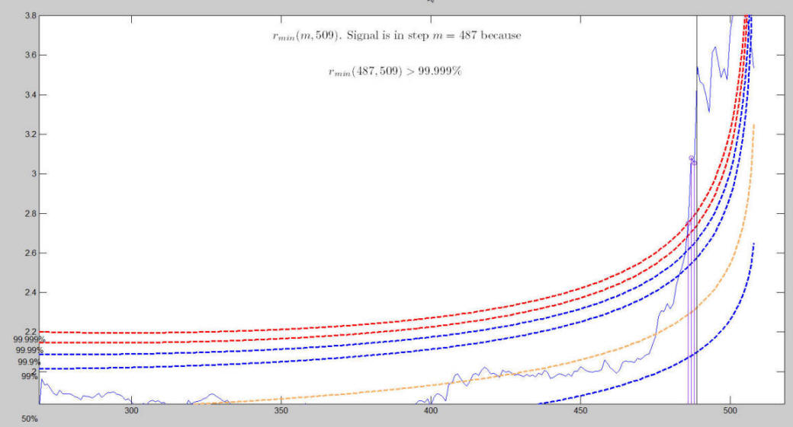
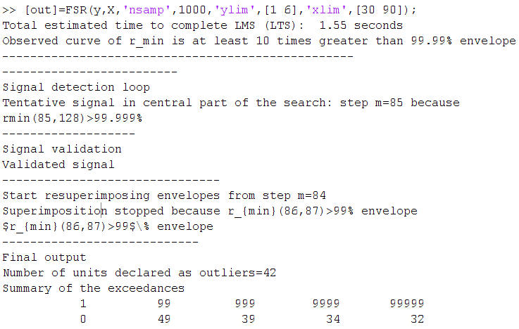

| Flexible Statistics Data Analysis Toolbox™ |
|
The forward search in linear regression used for outlier detection purposes examines the minimum deletion residual among observations that are not in the subset (say of size m). If this ordered observation [m+1] is an outlier relative to the other m observations, this distance will be ‘large" compared with the maximum residual of observations in the subset. In uncalibrated use of the minimum deletion residual to detect outliers the decision whether a difference in distances is ‘large" is subjective, without reference to any null distribution. To calibrate the forward search and so to provide an objective basis for decisions about the number of outliers in a sample we have found the distribution of the minimum deletion residual in the forward search. The output is a series of theoretical simultaneous confidence bands (envelopes) associated to the quantiles of the distribution of the minimum deletion residual.
To use the envelopes in the forward search for outlier detection we follow a two-stage process. In the first stage we run a search on the data, monitoring the bounds for all n observations until we obtain a "signal" indicating that observation m† therefore succeeding observations, may be outliers, because the value of the statistic lies beyond our threshold. In the context of signal detection, we have tried to take into account the fact that the envelopes of minimum deletion residual outside subset consist roughly of three parts; an initial decreasing part, a "central" roughly flat part and a steeply curving "final" part. Once a signal has been found (e.g. three consecutive values of minimum deletion residual above a certain threshold), we superimpose envelopes for values of n from this point until the first time that we introduce an observation we recognize as an outlier.
In order to illustrate how the procedure works we concentrate our attention on the same dataset (loyalty cards) which had already been analyzed in pages "Least trimmed squares (LTS) and Least median of squares (LMS)" and "Forward search in linear regression with exploratory data analysis (EDA) purposes".
The code below loads the data and launch the automatic outlier detection procedure
% Load the data
load('loyalty.txt');
nameX={'Intercept' 'Number of visits', 'Age', 'Number of persons in the family'};
% define y and X
y=loyalty(:,4);
X=loyalty(:,1:3);
% transform y
y1=y.^(0.4);
% Use function FSR (Forward search in linear regression with automatic outlier detection purposes)
[out]=FSR(y1,X);
The first relevant exceedance takes place at step m=487 because in this step the
observed value of the minimum deletion residual is above the 99.999% threshold.

When m = 486 the curve lies well within the envelopes. Around m = 490 the observed curve starts getting closer to the 99% envelope. The first time the curve goes out of the 99% envelope is step m = 492. The procedure of resuperimposing envelopes stops when m = 492 because this is the first time in which we have a value of dmin(m) for m>=m† greater than 99% threshold.


The stopping rule and the signal have been calibrated in such a way that the size of the test is close to the nominal.
The final plot which the automatic outlier detection procedure produces is the one which shows the response against the column of matrix X with the units which have been declared as outliers shown with a different symbol.

We now apply the automatic outlier detection procedure to the Hawkins data
load('hawkins.txt');
y=hawkins(:,9);
X=hawkins(:,1:8);
% Use function FSR (Forward search in linear regression with automatic outlier detection purposes)
[out]=FSR(y,X,'nsamp',1000,'ylim',[1 6],'xlim',[30 90]);
The plot below shows the step in which the signal takes place.

Envelopes superimposition stops in step m=87. In this dataset the units not declared as outliers are 86.

The image below shows what appears automatically in the command window summarizes the information about the signal and the stopping rule together with the number of times the empirical curve of minimum deletion residual fell above the extreme thresholds..
|
|
Robust Forward Linear Regression with exploratory purposes | Introduction to robust transformations in linear regression |
|